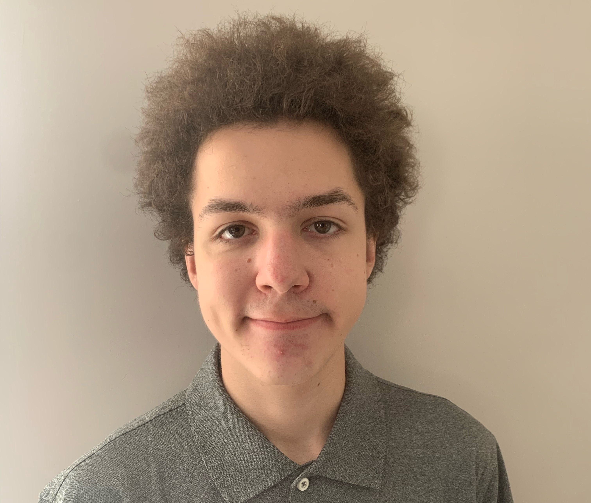

Image of Me
About Me:
I was born in the year 2003 on October 16th. I am an only child in my household, but I do have a sister who is 17 years older than me. As of right now I have three nephews and a dog named Barley. I went to Elementary school at Roberta Bondar Public School for 9 years which included Kindergarten. Once I finished grade 8 I was off to Hillcrest High School which is where I made most of my friends. Because of COVID I can't consistently meet up with them but we enjoy our time chatting online.
When it comes down to my hobbies, in the winter I enjoy snowboading and curling! As for the summer, I don't do a whole lot. I either stay inside playing games and chatting with friends, or I make an arrangement to have an outing with some friends. Of course that doesn't happen a whole lot because I'm bad at arranging outings... Whenever I'm the
only one around I play games Like Destiny 2 or Terraria and plenty more. Destiny 2, as of right now is my all time favourite game, beating out all the other games I've played ever since I was born.
The reason why Destiny 2 is my favorite game is because I can actually tell that I am improving. I always tell myself:
We all start somewhere, some lower than others, but with enough practice you can achieve great heights! You can't get better if you never try your hardest. - Myself :D
I always tell this to myself and my friends to keep them motivated in playing Destiny 2, because games are much better with friends.